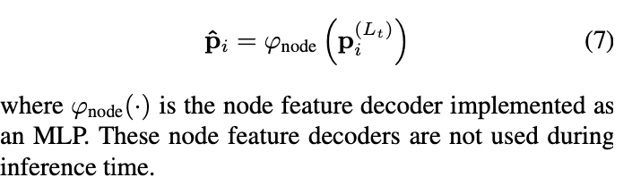
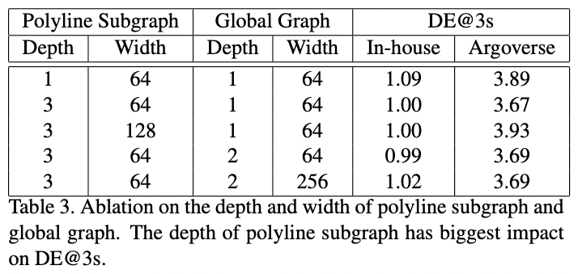

Waymo 行为预测的paper： VectorNet: Encoding HD Maps and Agent Dynamics From Vectorized Representation
Overview
最近很多Prediction将车辆和环境呈现为一个鸟瞰的图像，并用卷积神经网络（ConvNets）进行编码。VectorNet通过对矢量化高精地图和车辆轨迹，避免了有损渲染和计算密集型ConvNet编码的步骤。
语义地图 vs VectorNet:
在Argoverse和 in-house 的数据集上都取得了最好的效果。 并且相比语义地图的方法节省70%的模型参数，节约了计算开销。
网络介绍
向量表示
向量的表示就是上面图2的最左边。
The geographic extent of the road features can be a point, a polygon, or a curve in geographic coordinates. For example, a lane boundary contains multiple control points that build a spline; a crosswalk is a polygon defined by several points; a stop sign is represented by a single point.
lane可以表示为splines，人行道可以表示为一个很多个点组成的polygon，stop sign标记可以表示为单一个点。 对于agent来说，他们的轨迹也是一种splines。 这些元素都可以向量化表示： > for map features, we pick a starting point and di- rection, uniformly sample key points from the splines at the same spatial distance, and sequentially connect the neigh- boring key points into vectors; for trajectories, we can just sample key points with a fixed temporal interval (0.1 second), starting from t = 0 , and connect them into vectors.
- 对于地图的特征：选择一个start poine和朝向，等间距均匀采样关键点，并于相邻的关键点相连为向量
- 对于agent轨迹，按照0.1s sample关键点，并将它们连接成向量。
通过向量化的过程，可以得到折线polylines，这个polylines和轨迹、地图标注之间是一一对应的。如果给定的时空间隔足够小，得到的这些折线就与原始地图和轨迹十分接近。
我们将属于折线 \(\mathcal{P_j}\)的每一个向量vi看出图中的一个节点，节点特征如下：
\[ v_i = [d_i^s, d_i^e, a_i, j] \]
- \(d_i^s\)和\(d_i^e\)是vector的start和end point的坐标，可以是(x,y)或者(x,y,z)三维的形式
- \(a_i\)则是属性的特征，比如object的类型，轨迹的时间戳，道路的特征，道路限速等
- \(\mathcal{P_j}\)是一个id，表示\(v_i\)属于\(\mathcal{P_j}\)
Polyline子图构建
对于一个Polyline \(\mathcal{P}\), 它的节点有 \(\{v_1, v_2, ..., v_p \}\)， 可以定义一个子图网络：
\[ v_i^{(l + 1)} = \phi_{rel} \left( g_{enc}\left(v_i^{(l)}\right), \phi_{agg}\left(\{v_j^{(l)}\}\right)\right) \]
- \(v_i^{(l)}\)代表第i个节点第L层的节点特征
- \(g_{enc}()\)代表节点的变换，实践中采用MLP来实现
- \(\phi_{agg}()\)代表聚合，从相邻的节点来获取信息，实践中采用的是max_pooling
- \(\phi_{rel}()\)代表\(v_i\)和周围节点的关系，实践中采用的是concate的操作
最后经过多层的堆叠，来获取整个Polyline级别的特征： \[ \boldsymbol{p} = \phi_{agg} \left(\{v_i^{(L_p)}\}\right) \] 这里，\(\phi_{agg}\)也是max pooling操作
高阶交互
经过上面的子图，现在有了polyline级别节点的特征 \(\{p_1, p_2, ..., p_P\}\) 为了建立高阶的交互，建立了个global的交互图，详见论文图2的第3个子图。
公式定义如下： \[ \{p_i^{(l + 1)}\} = \text{GNN}\left(\{p_i^{(l)}\}, \mathcal{A} \right) \]
\(\{p_i^{(l)}\}\)代表polyline节点的集合
\(\mathcal{A}\)代表邻接矩阵，实践中采用全链接
GNN()代表 一层的GNN网络，实践中采用的是self attention layer： \[ \text{GNN}\left(P\right) = \text{softmax} \left(P_QP_K^T\right) P_V \] 其中，\(P\)是node的feature matrix，\(P_Q,P_k,P_v\)则是它的线性投影。
轨迹生成
论文中直接采用了MLP，当然也可以使用MultiPath的方法
多任务训练
为了鼓励我们的全局交互图更好地捕捉不同轨迹和地图之间的交互，我们提出了一个辅助的图像补全任务。在训练过程中，我们随机掩盖一些节点的特征，然后尝试去还原被掩盖的节点特征： 
损失函数
\[ \mathcal{L} = \mathcal{L}_{traj} + \alpha \mathcal{L}_{node} \]
- \(\mathcal{L}_{traj}\) negative Gaussian log-likelihood loss
- \(\mathcal{L}_{node}\) 是预测的节点和被掩盖节点的huber损失
GaussianLogLikelihood 损失函数为：
\[ \mathcal{L}(x, y) = -\log p(y) = -\log p\left(y|\mu(x),\Sigma(x)\right) \] where \[ p(y) = p(y|\mu,\Sigma) = \frac{1}{(2\pi)^{n/2}|\Sigma|^{1/2}} \exp\left\{-\frac{1}{2}(y-\mu)^\top\Sigma^{-1}(y-\mu) \right\} \] Huber比较常见：
\[ L_{\delta }(y,f(x))={\begin{cases}{\frac {1}{2}}(y-f(x))^{2}&{\textrm {for}}|y-f(x)|\leq \delta ,\\\delta \,|y-f(x)|-{\frac {1}{2}}\delta ^{2}&{\textrm {otherwise.}}\end{cases}} \]
实验
Datasets
- Argoverse: 333K 5-second long sequences split into 211K training, 41K validation and 80K testing sequences. (0, 2] seconds are used as observation and (2, 5] seconds for trajectory prediction.
- In-house dataset:2.2M的训练集和0.55M的测试集，轨迹为4s， (0, 1] 作为历史信息 (1, 4] 作为预测值
Ablation study for the ConvNet baseline
Impact of receptive fields
- 对比Resolution为400X400的卷积核3，5，7，可以看出更大的卷积核会有更大的性能提升，同时计算量也会增大。
- 从表1的第3行到第6行我们可以看出，较大的裁剪尺寸可以显著地提高性能，同时沿着轨迹裁剪也能得到更好的性能
这一观察结果证实了当把栅格化图像作为输入时，感受野的重要性。同时，也体现了它的局限性，一个精心设计的裁剪策略通常伴随着计算成本的增加。
Impact of rendering resolution
对比分辨率 400× 400(0.25 meter per pixel), 200× 200(0.5 meter per pixel) and 100× 100(1 meter per pixel) 可以看出随着分辨率的提高，性能也普遍得到了提高。
对于Argoverse数据集我们可以看出将分辨率从200×200增加到400×400会导致性能的略微下降，这可以解释为对于固定的3×3卷积核尺寸，有效感受野的减小造成的。
Ablation study for VectorNet
Impact of input node types
- 前三行对应只使用目标车辆的历史轨迹，只添加地图特征以及同时添加轨迹特征。我们可以清楚地看到增加地图特征明显地改善了轨迹预测性能。
- 表2的后四行比较了辅助任务的影响。我们可以看出添加这一任务有助于改善性能，尤其在长期预测。
Impact on the graph architectures
 - 对于折线子图，三层具有最好的性能，而对于全局图，只需要一层。 - 让MLP变宽并不会带来更好的性能，反而会对Argoverse数据集造成不好的影响
comparison with ConvNets
Comparison of Performance
对于内部数据集，在大量减少模型参数和计算量的前提下，VectorNet达到了与最好的残差网络模型相当的性能。 对于Argoverse数据集，VectorNet明显优于最好的卷积网络，在预测3秒时位置误差减少了12%。
我们发现内部数据集包含很多静止的车辆，这些场景可以很容易地被卷积网络解决，因为它擅长捕捉局部模式。但是Argoverse数据集中只提供“interesting”场景。VectorNet性能好过最优的卷积网络基线，大概是因为它能够通过层级图网络捕捉更大范围的环境信息。
Comparison of FLOPs and model size
结果如表4所示(预测的解码器没有添加到计算量和参数量的计算中)。 我们可以看到随着卷积核尺寸和输入图片尺寸的增加，卷积网络的计算量呈二次方增加，并且模型的参数量也随着卷积核呈二次方增加。 对于VectorNet，计算量取决于场景中的向量节点和折线的数量。对于内部数据集，地图中折线的平均数量为17，包含205个向量。平均动态交通参与者折线数为59，包含590个向量。我们基于这些平均数来计算计算量。注意Vector是以障碍物为中心计算的，所以计算量随着预测目标的数量呈线性增加。
比较R18-k3-t-r400（卷积网络中最优模型）和VectorNet，VectorNet明显优于卷积网络。在计算方面，对于一个交通参与者，卷积网络比VectorNet增加了200+倍的计算量。考虑到场景中车辆的平均数量约为30辆，VectorNet的实际计算量仍然比卷积网络小得多。同时，VectorNet的参数量为卷积网络参数量的29%。基于比较可以发现VectorNet可以在大幅度减少计算成本的同时显著提高性能。
Comparison with state-of-the-art methods
VectorNet性能最好
小结
vectornet是一个比较新颖的特征提取工具，通过将地图与车辆历史轨迹看为"vector"的形式，能较好的学习到环境语义的embedding表达。据说Waymo内部将vector用在高速卡车上。
不过vectornet这篇论文预测的header做的比较简单，也没有搞多模态的设计，不过也无伤大雅，毕竟这不是只要的内容。
参考文献
- Gao J, Sun C, Zhao H, et al. VectorNet: Encoding HD Maps and Agent Dynamics from Vectorized Representation[C]//Proceedings of the IEEE/CVF Conference on Computer Vision and Pattern Recognition. 2020: 11525-11533.